l2e-intro.Rmd\[ \newcommand{\vbeta}{\boldsymbol{\beta}} \]
The L2E package (version 2.0) implements the
computational framework for L\(_2\)E
regression in Liu, Chi, and Lange (2022),
which was built on the previous work in Chi and
Chi (2022). Both work use the block coordinate descent strategy
to solve a nonconvex optimization problem but employ different methods
for the inner block descent updates. We refer to the method in Liu, Chi, and Lange (2022) as “MM” and the one
in Chi and Chi (2022) as “PG” in our
package. This vignette provides code to replicate some examples
illustrating the usage of the frameworks in both papers and the
improvements from Liu, Chi, and Lange
(2022).
The first example illustrates how to perform robust isotonic regression via the L\(_{2}\) criterion, also called L\(_2\)E isotonic regression. We begin by generating the true fit \(f\) from a cubic function (depicted by the black line on the figure below). We obtain the observed response by adding some Gaussian noise to \(f\) (depicted by the gray points on the figure below).
set.seed(12345)
n <- 200
tau <- 1
x <- seq(-2.5, 2.5, length.out=n)
f <- x^3
y <- f + (1/tau)*rnorm(n)
plot(x, y, pch=16, col='gray')
lines(x, f, lwd=3)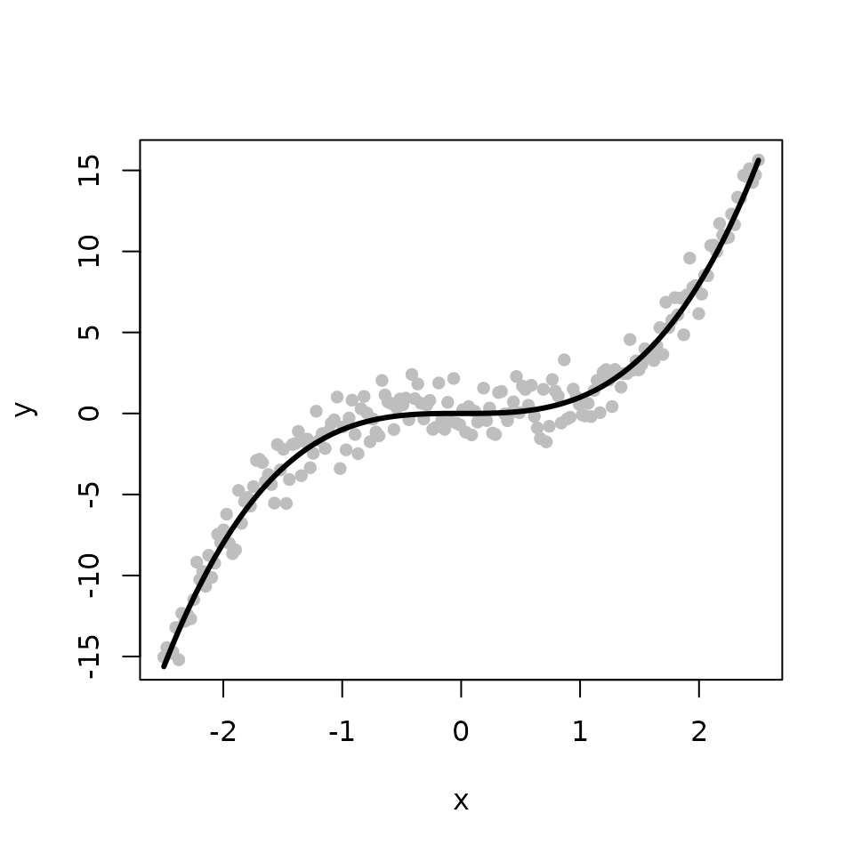
The L2E_isotonic function provides two options for
implementing the L\(_2\)E isotonic
regression. By setting the argument “method = MM” (the default), the
function calls l2e_regression_isotonic_MM to perform L\(_2\)E isotonic regression using the MM
method in Liu, Chi, and Lange (2022).
Setting “method = PG” leads the function to call
l2e_regression_isotonic to perform L\(_2\)E isotonic regression using the PG
method in Chi and Chi (2022).
We obtain and compare three estimates for the underlying fit \(f\) from the classical least squares (LS), the L\(_{2}\)E with MM, and the L\(_{2}\)E with PG, respectively. The true fit is shown in black while the fits from the LS, the L\(_{2}\)E with MM, and the L\(_{2}\)E with PG are shown in blue, red, and green, respectively. In the absence of outliers, all methods produce similar estimates. For the two L\(_{2}\)E methods, MM is faster than PG.
library(L2E)
library(isotone)
tau <- 1/mad(y)
b <- y
# LS method
iso <- gpava(1:n, y)$x
# MM method
sol_mm <- L2E_isotonic(y, b, tau, method = "MM") user system elapsed
0.153 0.000 0.152
# PG method
sol_pg <- L2E_isotonic(y, b, tau, method = 'PG') user system elapsed
0.320 0.003 0.324
# Plots
plot(x, y, pch=16, col='gray')
lines(x, f, lwd=3)
lines(x, iso, col='blue', lwd=3) ## LS
lines(x, sol_mm$beta, col='red', lwd=3) ## MM
lines(x, sol_pg$beta, col='green', lwd=3) ## PG
legend("bottomright", legend = c("LS", "MM", "PG"), col = c('blue','red', 'green'), lwd=3)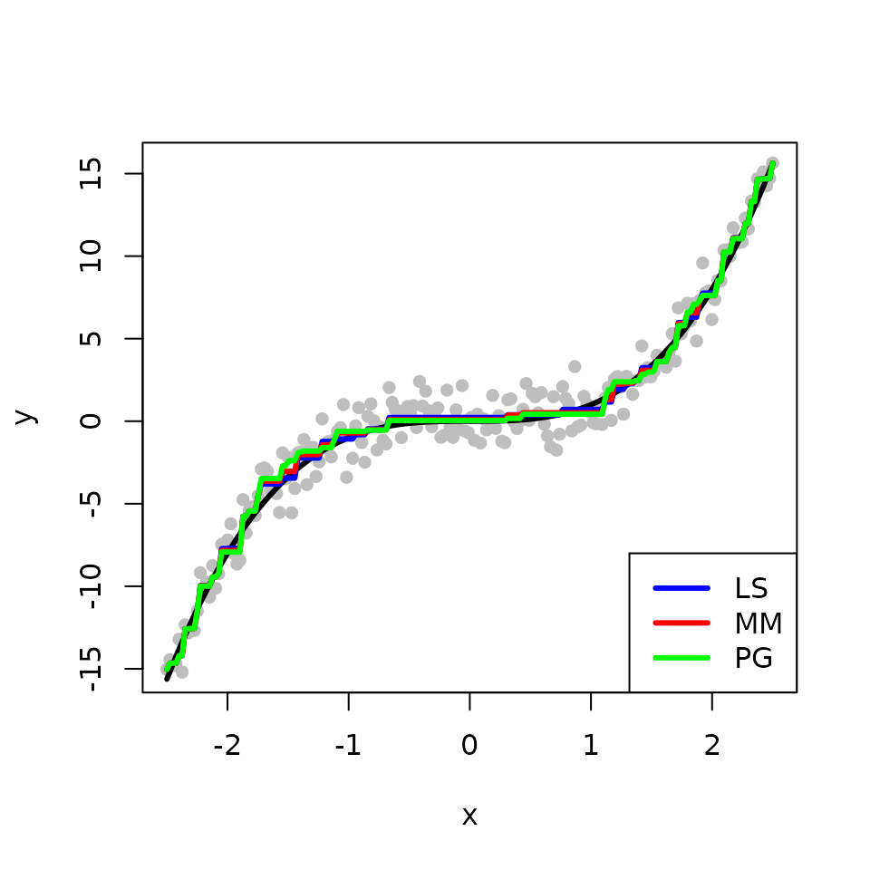
Next, we introduce some outliers by perturbing some of the observed responses.
num <- 20
ix <- 1:num
y[45 + ix] <- 14 + rnorm(num)
plot(x, y, pch=16, col='gray')
lines(x, f, lwd=3)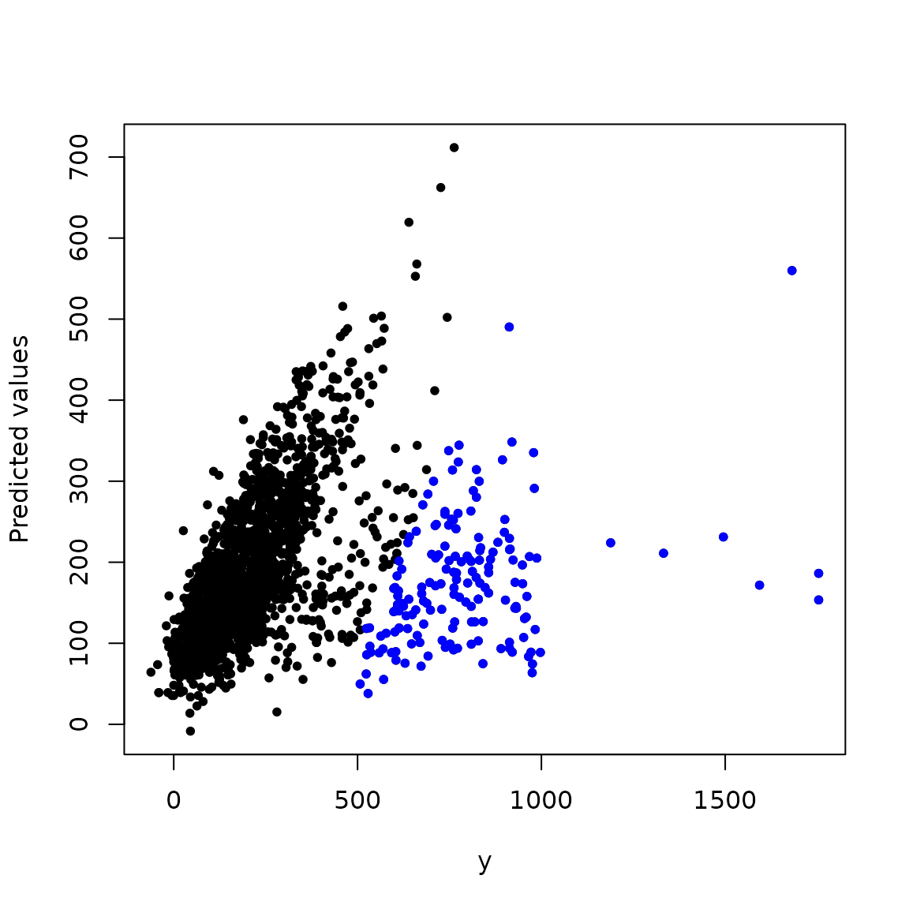
We obtain the three estimates with the outlying points. The L\(_{2}\)E fits are less sensitive to outliers than the LS fit in this example. The two methods MM and PG produce comparable estimates, but MM is faster than PG.
tau <- 1/mad(y)
b <- y
# LS method
iso <- gpava(1:n, y)$x
# MM method
sol_mm <- L2E_isotonic(y, b, tau, method = "MM") user system elapsed
0.041 0.000 0.041
# PG method
sol_pg <- L2E_isotonic(y, b, tau, method = 'PG') user system elapsed
0.187 0.000 0.187
# Plots
plot(x, y, pch=16, col='gray')
lines(x, f, lwd=3)
lines(x, iso, col='blue', lwd=3) ## LS
lines(x, sol_mm$beta, col='red', lwd=3) ## MM
lines(x, sol_pg$beta, col='green', lwd=3) ## PG
legend("bottomright", legend = c("LS", "MM", "PG"), col = c('blue','red', 'green'), lwd=3)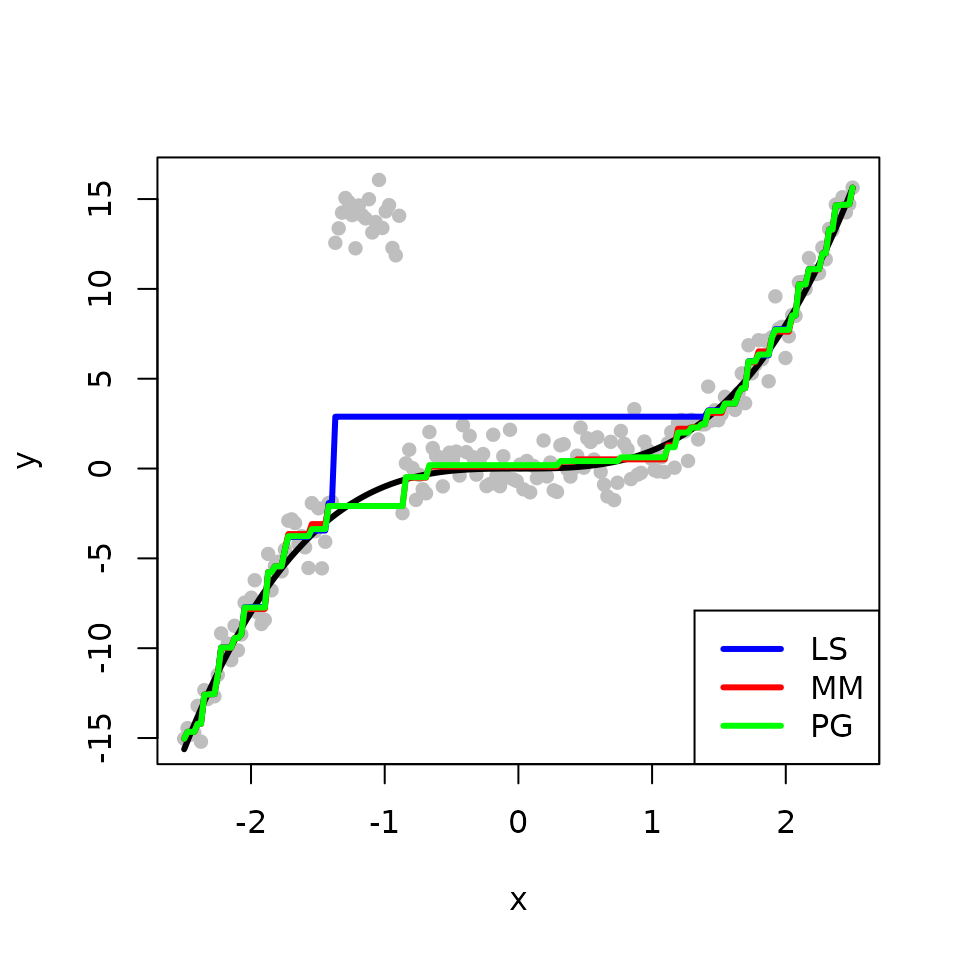
The second example illustrates how to perform robust convex regression via the L\(_{2}\) criterion, also called L\(_2\)E convex regression. We begin by simulating a convex function \(f\). The observed response is composed of \(f\) with some additive Gaussian noise.
set.seed(12345)
n <- 300
tau <- 1
x <- seq(-2, 2, length.out=n)
f <- x^4 + x
y <- f + (1/tau) * rnorm(n)
plot(x, y, pch=16, col='gray', cex=0.8)
lines(x, f, col='black', lwd=3)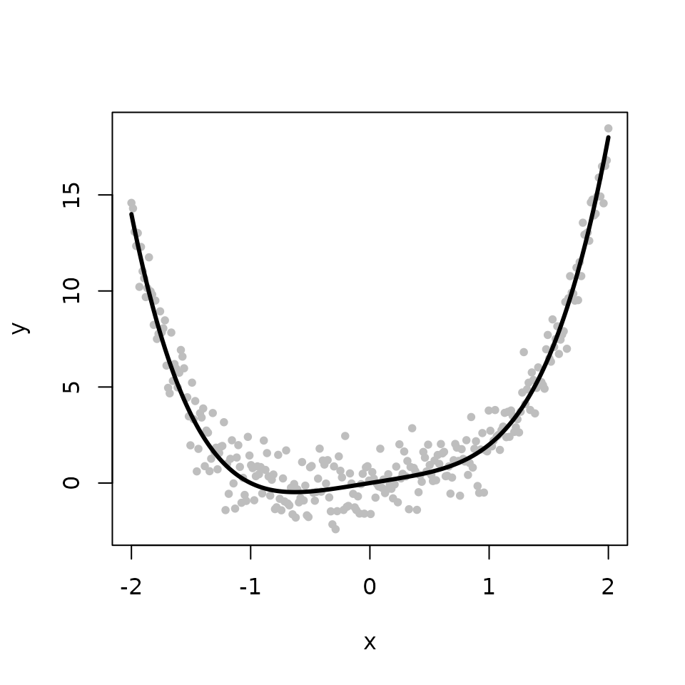
The L2E_convex function provides two options for
implementing the L\(_2\)E convex
regression. By setting the argument “method = MM” (the default), the
function calls l2e_regression_convex_MM to perform L\(_2\)E convex regression using the MM method
in Liu, Chi, and Lange (2022). Setting
“method = PG” leads the function to call
l2e_regression_convex to perform L\(_2\)E convex regression using the PG method
in Chi and Chi (2022).
We obtain and compare three estimates for the underlying fit \(f\) from the classical least squares (LS), the L\(_{2}\)E with MM, and the L\(_{2}\)E with PG, respectively. The true fit is shown in black while the fits from the LS, the L\(_{2}\)E with MM, and the L\(_{2}\)E with PG are shown in blue, red, and green, respectively. In the absence of outliers, all methods produce similar estimates. For the two L\(_{2}\)E methods, MM is faster than PG.
library(cobs)
tau <- 1/mad(y)
b <- y
## LS method
cvx <- fitted(conreg(y, convex=TRUE))
## MM method
sol_mm <- L2E_convex(y, b, tau, method = "MM") user system elapsed
0.137 0.000 0.137
## PG method
sol_pg <- L2E_convex(y, b, tau, method = 'PG') user system elapsed
1.124 0.000 1.124
plot(x, y, pch=16, col='gray')
lines(x, f, lwd=3)
lines(x, cvx, col='blue', lwd=3) ## LS
lines(x, sol_mm$beta, col='red', lwd=3) ## MM
lines(x, sol_pg$beta, col='green', lwd=3) ## PG
legend("bottomright", legend = c("LS", "MM", "PG"), col = c('blue','red', 'green'), lwd=3)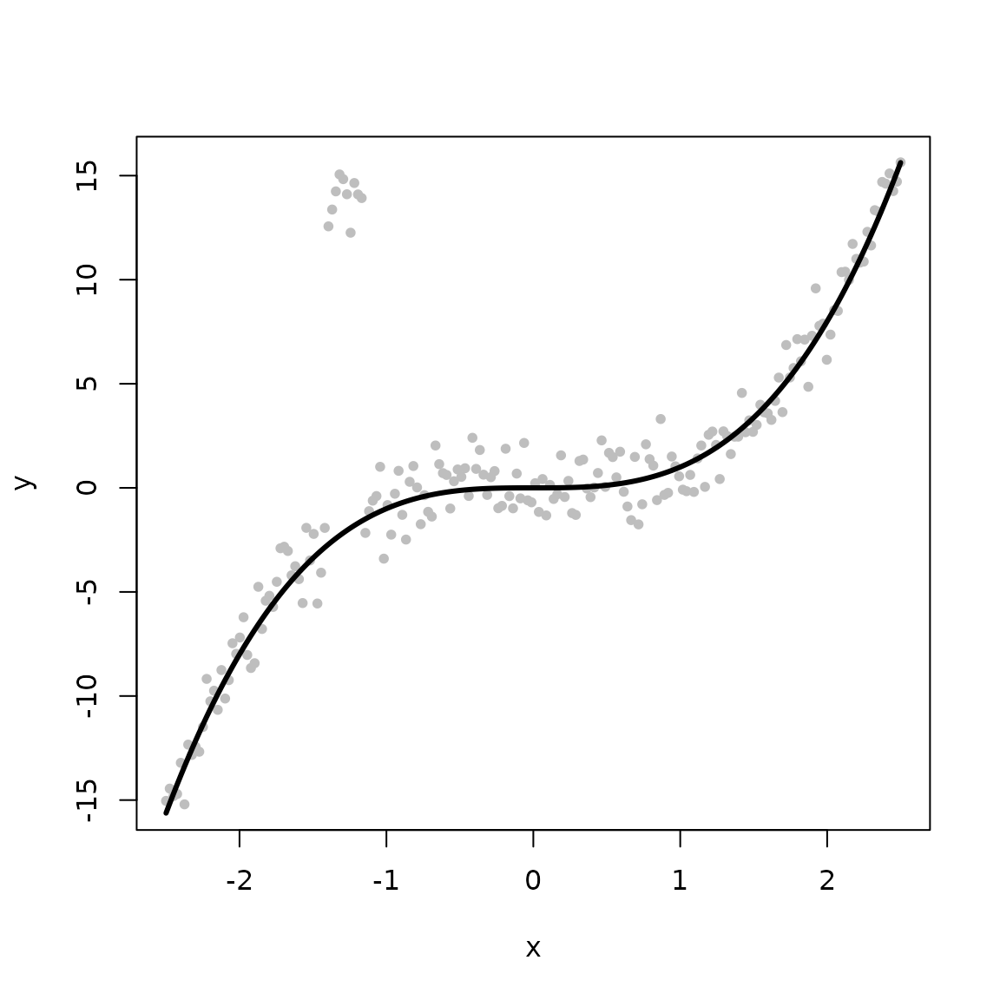
Next, we again introduce some outlying points.
num <- 50
ix <- 1:num
y[45 + ix] <- 14 + rnorm(num)
plot(x, y, pch=16, col='gray', cex=0.8)
lines(x, f, col='black', lwd=3)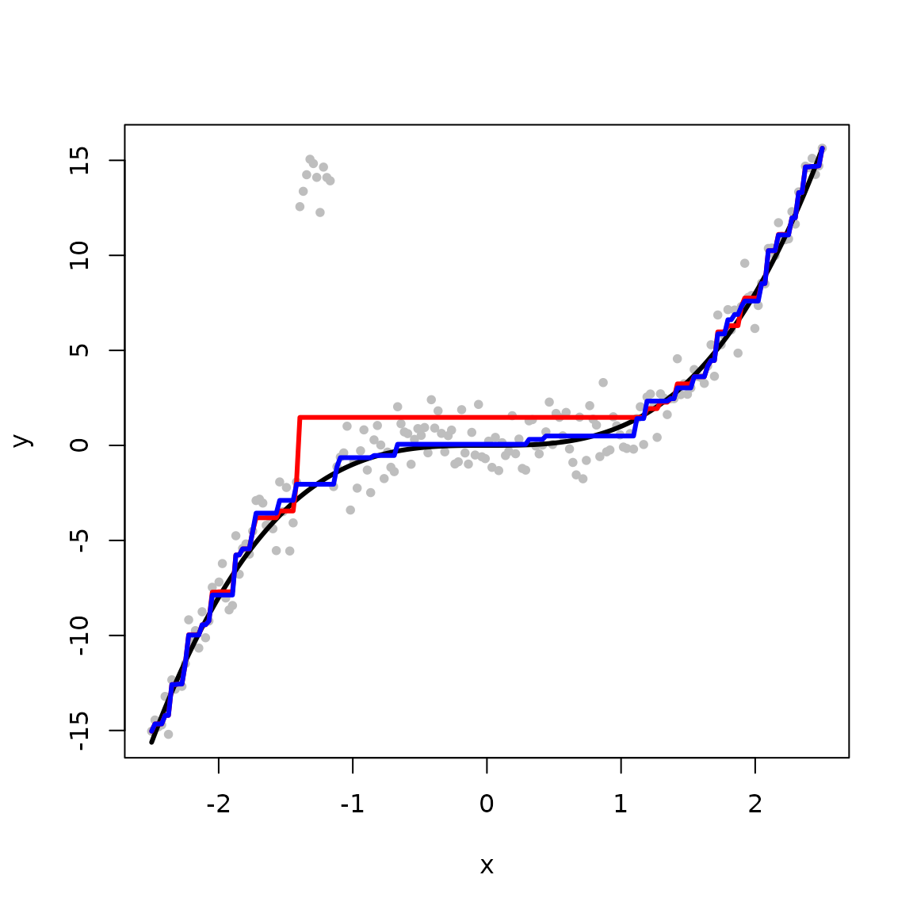
We obtain the three estimates with the outlying points. The L\(_{2}\)E fits are less sensitive to outliers than the LS fit in this example. The MM method not only requires less computional time but also produces better estimation than the PG method.
tau <- 1/mad(y)
b <- y
## LS method
cvx <- fitted(conreg(y, convex=TRUE))
## MM method
sol_mm <- L2E_convex(y, b, tau, method = "MM") user system elapsed
0.179 0.000 0.179
## PG method
sol_pg <- L2E_convex(y, b, tau, method = 'PG') user system elapsed
2.905 0.000 2.905
plot(x, y, pch=16, col='gray')
lines(x, f, lwd=3)
lines(x, cvx, col='blue', lwd=3) ## LS
lines(x, sol_mm$beta, col='red', lwd=3) ## MM
lines(x, sol_pg$beta, col='green', lwd=3) ## PG
legend("bottomright", legend = c("LS", "MM", "PG"), col = c('blue','red', 'green'), lwd=3)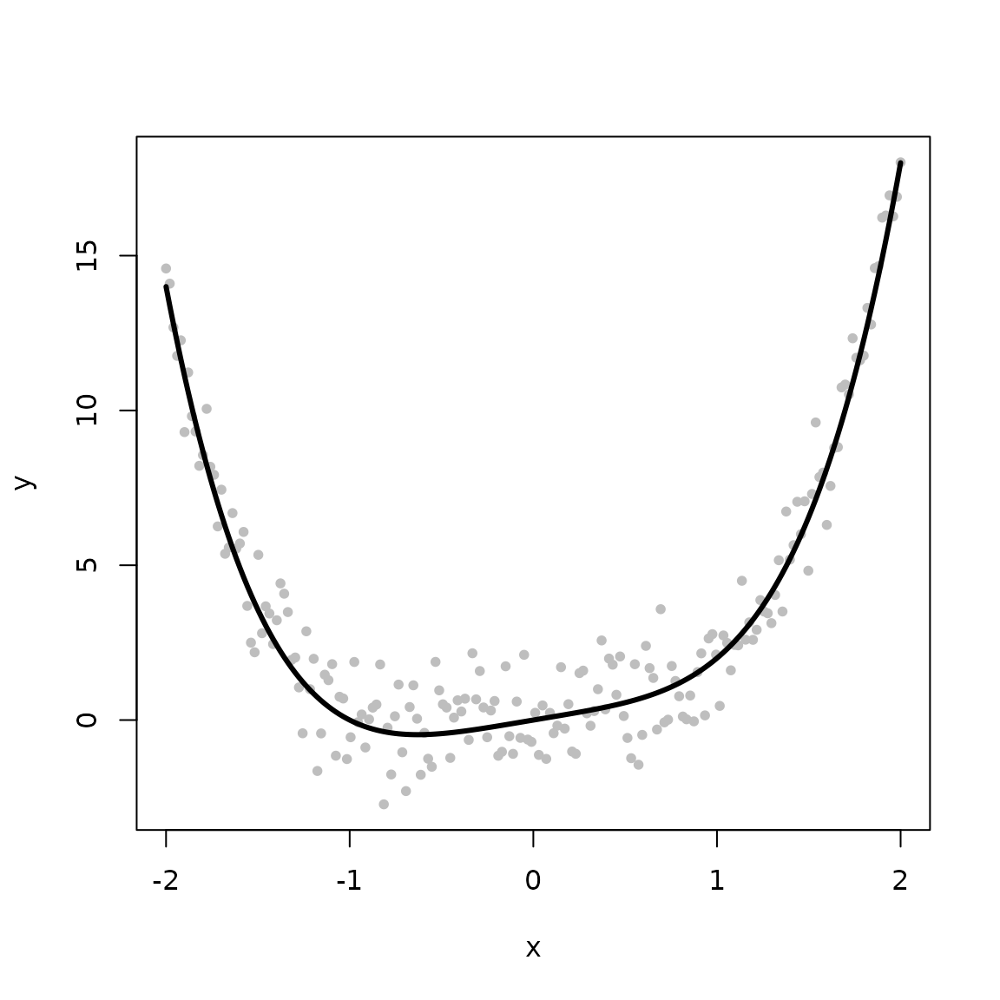
The third example provides code to perform L\(_{2}\)E multivariate regression with the
Hertzsprung-Russell diagram data of star cluster CYG OB1. The data set
is commonly used in robust regression owing to its four known outliers –
four bright giant stars observed at low temperatures. The data set is
publicly available in the R package robustbase. We begin by
loading the data from the robustbase package.
library(robustbase)
data(starsCYG)
plot(starsCYG)We use the L2E_multivariate function to perform the
L\(_2\)E multivariate reeegression,
namely, multivariate regression via the L\(_{2}\) criterion. The
L2E_multivariate function provides two options for
implementing the L\(_2\)E multivariate
regression. By setting the argument “method = MM” (the default), the
function calls l2e_regression_MM to perform L\(_2\)E multivariate regression using the MM
method in Liu, Chi, and Lange (2022).
Setting “method = PG” leads the function to call
l2e_regression to perform L\(_2\)E multivariate regression using the PG
method in Chi and Chi (2022).
We next use the MM method to fit the L\(_2\)E multivariate regression model and compare it to the least squares fit. The figure below shows that the L\(_2\)E fit can reduce the influence of the four outliers and fits the remaining data points well. The LS fit is heavily affected by the four outliers.
y <- starsCYG[, "log.light"]
x <- starsCYG[, "log.Te"]
X0 <- cbind(rep(1, length(y)), x)
# LS method
mle <- lm(log.light ~ log.Te, data = starsCYG)
r_lm <- y - X0 %*% mle$coefficients
# L2E+MM method
tau <- 1/mad(y)
b <- c(0, 0)
# Fit the regression model
sol_mm <- L2E_multivariate(y, X0, b, tau, method="MM") user system elapsed
0.017 0.000 0.017
l2e_fit_mm <- X0 %*% sol_mm$beta
# compute limit weights
r_mm <- y - l2e_fit_mm
data <- data.frame(x, y, l2e_fit_mm)
d_lines <- data.frame(int = c(sol_mm$beta[1], mle$coefficients[1]),
sl = c(sol_mm$beta[2], mle$coefficients[2]),
col = c("red", "blue"),
lty = c("solid", "dashed"),
method = c("L2E", "LS"))
ltys <- as.character(d_lines$lty)
names(ltys) <- as.character(d_lines$lty)
cols <- as.character(d_lines$col)
cols <- cols[order(as.character(d_lines$lty))]
method <- as.character(d_lines$method)
library(ggplot2)
library(latex2exp)
p <- ggplot() +
geom_point(data = data, aes(x, y), size=2.5) + ylim(2, 6.5)+
geom_abline(data = d_lines[d_lines$col == "red", ],
aes(intercept = int, slope = sl, lty = lty), color = "red", size=1) +
geom_abline(data = d_lines[d_lines$col == "blue", ],
aes(intercept = int, slope = sl, lty = lty), color = "blue", size=1) +
scale_linetype_manual(name = "Method", values = ltys, breaks=c("dashed", "solid"),
labels = c("LS ",
expression(L[2]~E)),
guide = guide_legend(override.aes = list(colour = cols), legend=method))+
theme_bw()
print(p)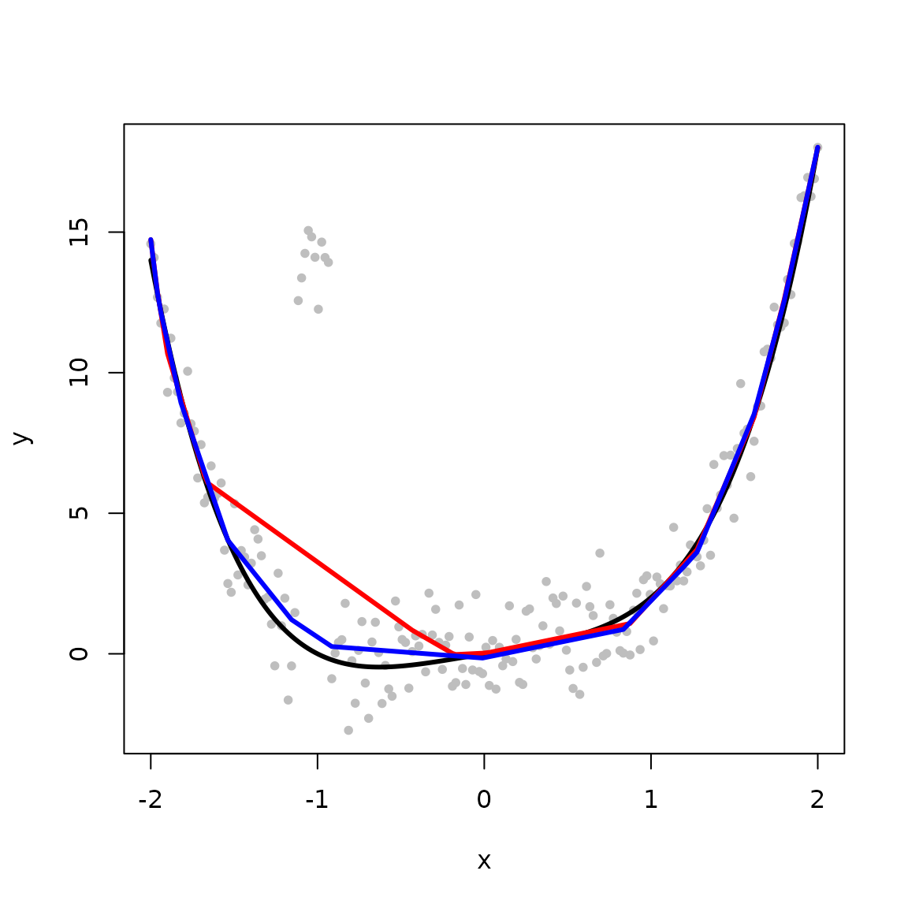
We next show how to use the convereged weights from the MM method to identify outliers in the data. As discussed in Liu, Chi, and Lange (2022), a small weight suggests a potential outlier.
w <- as.vector(exp(-0.5* (sol_mm$tau*r_mm)**2 ))
data <- data.frame(x, y, l2e_fit_mm, w)
ggplot(data, aes(x=log10(w))) + geom_histogram()+
labs(
y="Count", x=expression(log[10]~'(w)'))+theme_bw()`stat_bin()` using `bins = 30`. Pick better value with `binwidth`.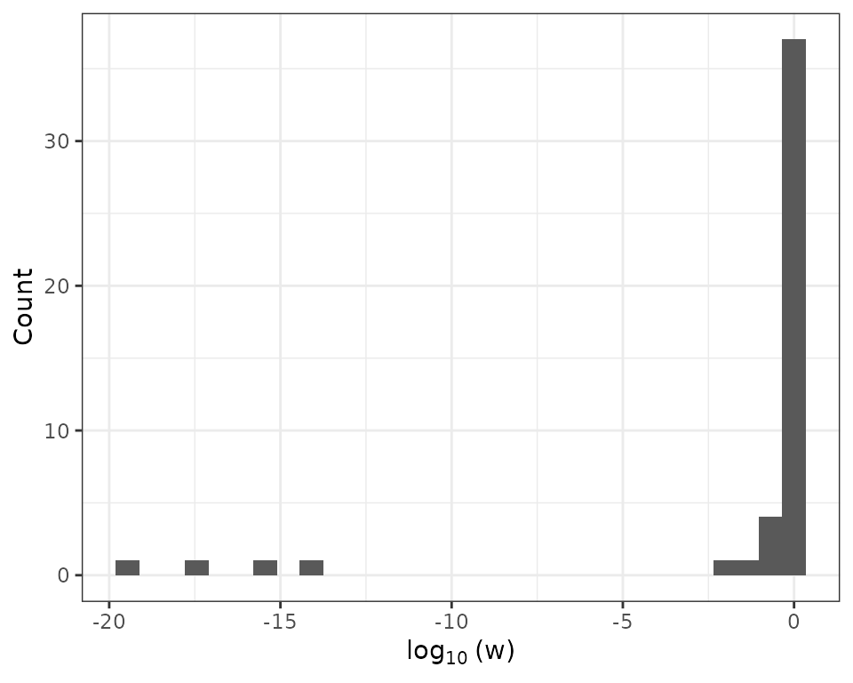
The four extremely small weights in the above histogram indicate that there are four potential outliers in the data. Next, we incorporate the four outliers into the scatter plot. The MM method successfully identify the four outliers.
outlier_mm <- rep("yes", length(y))
for (k in 1:length(y)) {
if(w[k]>1e-5) # the threshold value can range from 1e-3 to 1e-14 according to the histogram
outlier_mm[k] <- "no"
}
outlier_mm <- factor(outlier_mm , levels=c("yes", "no"))
data <- data.frame(x, y, l2e_fit_mm, outlier_mm)
p+
geom_point(data = data, aes(x, y, color=outlier_mm), size=2.5) +
scale_color_manual(values = c(2,1), name="Outlier")+
labs(
y="Light Intensity", x="Temperature")+ theme_bw() 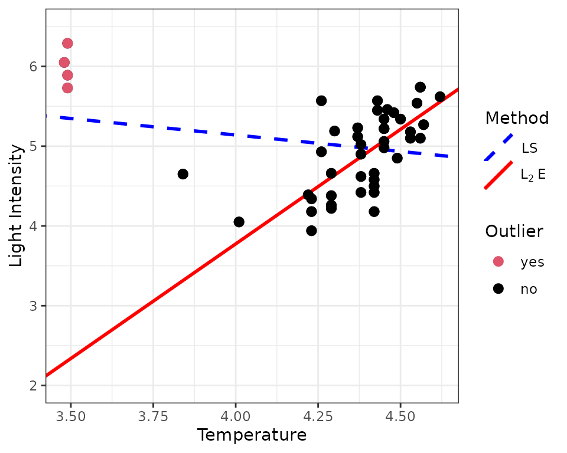
The new L2E package include implementation of L\(_2\)E sparse regression and L\(_2\)E trend filtering. The
L2E_sparse_ncv function computes a solution path of L\(_2\)E sparse regression with exisitng
penalties available in the ncvreg package. The
L2E_sparse_dist function computes a solution path of L\(_2\)E sparse regression with the distance
penalty. The L2E_TF_lasso function computes a solution path
of L\(_2\)E trend filtering with the
Lasso penalty. The L2E_TF_dist function computes a solution
path of L\(_2\)E trend filtering with
the distance penalty. Readers may refer to Liu,
Chi, and Lange (2022) for advantages of distance penalization in
the two examples of sparse regression and trend filtering.